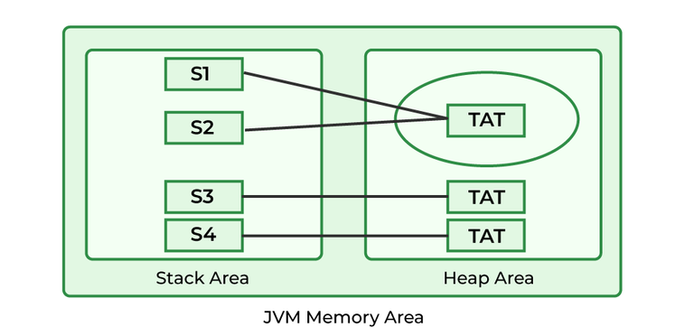

String definition
Strings are the types of objects which can store characters as elements.
String are like an array of characters in java.
String can be created either dynamically by specifying new keywork, a new object will be created in heap area
or String can be created without new keyword and by using literal, a new object will be created in SCP only if the same literal object does not exists
{
// creating string from new
String str = new String("devendra");
// creating string from literal
String str1 = "singh";
byte[] b_arr = {71, 101, 101, 107, 115};
String s_byte_array =new String(b_arr); //Geeks
// create string from char array
char char_arr[] = {'G', 'e', 'e', 'k', 's'};
String s_char_array = new String(char_arr); //Geeks
// create string from stringbuffer
StringBuffer s_buffer = new StringBuffer("Geeks");
String s_from_buffer = new String(s_buffer); //Geeks
// create string from stringbuilder
StringBuilder s_builder = new StringBuilder("Geeks");
String s_from_builder = new String(s_builder); //Geeks
}
Strings are immutable in java, means they can not be modified whenever anyone tries to modify them, a new object is created
They are immutable Because java uses the concept of string literal.
Suppose there are 5 reference variables, all refer to one object.
If one reference variable changes the value of the object,
it will be affected by all the reference variables.
That is why string objects are immutable in Java.
{
// Declaring Strings
String s1 = "TAT"; // object created in SCP if does not exists
String s2 = "TAT"; // object already created above
String s3 = new String("TAT"); // new object created
String s4 = new String("TAT"); // new object created
}

|
String class common methods
String s = abc
s.length(); // get the length of the string, means no of character it has
// returns 3
s.concat("abc); append passed string to the end of given string
// returns abcabc, but not stored anywhere, so eligible for garbage collection
s.contains("abc"); // return true if the given string contains passed string, case sensitive
// return true as our string contains abc
// return abc
s.toLowerCase(); // change string to lower case
// return ABC
s.toUpperCase(); // change string to upper case
// return {97, 98, 99}
s.getBytes(); // get byte array from string
// returns an integer number
s.hashCode(); // return the hascode of the string object
// returns bbcbbc
s.replace('a', 'b'); // replace all occurance of old char with new char
// return defdef
s.replace("abc", "def"); // replace all occurance of old string with new string
// s still holds abcabc
s = "abcabc0abc";
// returns abcabc abc
s.replaceAll("[0-9]", " "); // replace all occurance of given regex with new string
// returns defabc abc
s.replaceFirst("abc", "Def"); // replace only first occurance with given string
// return 1
s.indexOf('a'); // return first index of given char;
// returns -1
s.indexOf("as"); // return first index of given string
// returns 3
s.indexOf('a', 3); // return first index starting from given index of char
// returns 3
s.indexOf("abc", 3); //return first index starting from given index of string
// similarly lastIndex() method is there
s.trim(); // remove white space from begining and end
s.endsWith("abc"); // return true if string end with given string
s.contentEquals(s1); // return true if content of both strings are equal, case sensitive
s.charAt(2); // get char at particular index
s.toCharArray(); // change string to char array
s.substring(1,2); // get substring from a given index to given index(not inclusive)
s = "abc:def:ghi";
String[] sSplit = s.split(":"); // split the given string into string array based on passed spliter
// {"abc", "def", "ghi"}
// equals() and ==
String sFirst = "devendra";
String sSecond = "devendra";
String sThird = new String("devendra");
// equals()
System.out.println(sFirst.equals(sSecond)); // euqals in String class is for content compare, return false if operands are not related
// ==
System.out.println(sFirst==sSecond); // == is always for reference compare, since same object, true
System.out.println(sFirst==sThird); // == is always for reference compare, since different object, false
// compareTo
// return <0 if first comes before second
// return 0 if both are equals
// return >0 if first comes after second
System.out.println(sFirst.compareTo(sSecond)); // this will return 0 as both are same
sFirst = "e";
System.out.println(sFirst.compareTo(sSecond)); // now first comes after second so returns >0
sSecond = "f";
System.out.println(sFirst.compareTo(sSecond)); // now first comes before second so returns <0
|
when we print a string, stringbuilder, stringbuffer, directly its content is get printed
because object call means .toString() and toString is overriden in these classes to return content
|
StringBuffer & StringBuilder definition
StringBuffer came in 1.0, are mutable classes, does not use SCP, StringBuffer can be modified, are synchronized hence thread safe
StringBuilder came in 1.5, are mutable classes, does not use SCP, StringBuilder can be modified, are no synchronized hence not thread safe
StringBuilder are more efficent than StringBuffer, StringBuilder came in java 1.15
Using these instead of String if content keep on changing, as String will create new object everytime
but above will modify the same object
if content is fixed, go with string, if not go with builder, buffer
Both StringBuilder and StringBuffer are growable objects, having default capacity of 16, once reaches out of capactiy
new capactiy object is created with capacity as and all old values are copied to it,
old object is applicable for garbage collection
new capacity = (old capacity *2) + 2
StringBuffer sb = new StringBuffer();
Sting s = new String("as");
StringBuffer sb1 = new StringBuffer(s); // creating stringbuffer from string
StringBuffer sb1 = new StringBuffer("hello"); // creating stringbuffer from string
System.out.println(sb.capacity()); // default capacity 16
sb.append("aaaaaaaaaaaaaaaaa");
System.out.println(sb.capacity()); // 34 ((16*2)+2)
StringBuffer sb1 = new StringBuffer(100);
System.out.println(sb1.capacity()); // 100, as we have provided capacity
|
StringBuffer & StringBuilder are mutable
means object content can be changed, without creating a new object
// only one object is created below and it keeps modifying
StringBuffer sb2 = new StringBuffer();
sb2.append("Hello");
sb2.append(" ");
sb2.append("world");
System.out.println(sb2);
|
StringBuffer & StringBuilder methods
// all of the string methods are applicable to StringBuffer and StringBuilder also
// few methods which are only in StringBuffer and StringBuilder are as below
capacity(), to get the capactiy of the object
sb.capacity();
append(String s), to append a string at the end of object content
sb.append("last"); // you can append any int, float, double, char, boolean, string value
sb.append(10);
setLength() to increase capacity so that the object can have given length value
StringBuffer sb10 = new StringBuffer(); // 16 capactigy default
System.out.println(sb.capacity());
sb.setLength(50);
// you can set length of the string, means capacity will increase as per formula so that it can hold 50 characters atleast
// so (16*2)+2 = 34 which still can not hold 50 so (34*2)+2 = 70
System.out.println(sb.capacity()); //70
sb.reverse(); // to reverse the content
System.out.println(sb); // will print cba
sb.replace(0,1,"cbc"); // this will replace from start to end non inclusive withgiven string
System.out.println(sb); // output will be cbcba
sb.insert(1,10); // insert any int, char, float, double, string, long
// output will be c10bcba
sb.insert(2 ,"myname");
//c1myname0bcba
System.out.println(sb);
sb.delete(0,1); // delete string from start to end index(non inclusive)
System.out.println(sb);
// 1myname0bcba
sb.ensureCapacity(100); // ensure that capacity is at least 100
|
String Constant Pool
whenever any string literal is encountered, an object is create in SCP without any explicit reference variable
JVM internally manager the reference variable for SCP objects
till 1.6 SCP was in method area, permGen
from 1.7 SCP is part of heap area only and moved from permGen because size of permGen was limited 64MB
SCP providers reusability for objects as multiple reference refer to same object, so memory saved
one e.g. is creating a voting application and create city as Gurgaon, same city object used for all the voters of gurgaon
now if anyone tries to change the city, a new separate object will be created, as strings are immutable
so string are made immutable to solve such kinf of issues as if object update was allowed, and someone changed the city from gurgaon to delhi
it would have been changed for all voters
// below code create 1 object in heap as new is used, and one object in SCP for literal "devendra"
// so below line will create 2 objects, 1 in heap, 1 in SCP
{
String s = new String("devendra")
}
{
String s1 = new String("devendra"); // 2 object create 1 in heap 1 in SCP
String s2 = new String("devendra"); // 1 object create in heap as new is used, literal is same as above so SCP does not create new SCP object, as SCP already have object having same literal
String s3 = "devendra"; // same SCP object is used, no new object created at all
String s4 = "devendra"; // same SCP object is used, no new object created at all
}
{
String s = new String("devendra"); // 1 object create in heap and 1 for literal is created in SCp
String s1 = s.concat("singh"); // here 1 copy will be created in SCp as "singh" liternal does not exist there
// also concat is a run time operation, so a new object will be created in heap area and s1 will be assigned to it
s1.concat(" hello "); // again 1 SCp object will be created for literal
// 1 object again will be created in heap area for run time concat operation, but no reference so will be garbage collected
}
|